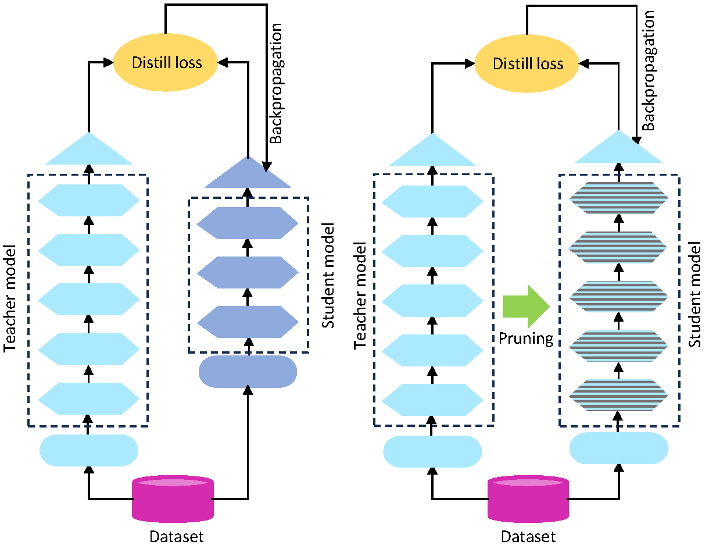

Research · WANT@NeurIPS 2023
DONUT-hole: DONUT Sparsification by Harnessing Knowledge and Optimizing Learning Efficiency
Read the paperAuthors

Abstract
This paper introduces DONUT-hole, a sparse OCR-free visual document understanding (VDU) model that addresses the limitations of its predecessor, DONUT. DONUT uses a transformer architecture to combine visual and semantic understanding without a separate optical character recognition (OCR) component. However, its high memory and computational demands can limit deployment in production environments and on edge devices. We address these challenges with a model optimization strategy based on knowledge distillation and pruning. DONUT-hole reduces model density by 54% while preserving performance. We also achieve a global representational similarity index of 0.79 between DONUT and DONUT-hole, measured using centered kernel alignment (CKA). Evaluation on document image key information extraction (KIE) highlights its potential for more efficient visual document understanding systems.